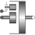

IdealPlanetaryIdeal planetary gear box |

|
Information
This information is part of the Modelica Standard Library maintained by the Modelica Association.
The IdealPlanetary gear box is an ideal gear without inertia, elasticity, damping or backlash consisting of an inner sun wheel, an outer ring wheel and a planet wheel located between sun and ring wheel. The bearing of the planet wheel shaft is fixed in the planet carrier. The component can be connected to other elements at the sun, ring and/or carrier flanges. It is not possible to connect to the planet wheel. If inertia shall not be neglected, the sun, ring and carrier inertias can be easily added by attaching inertias (= model Inertia) to the corresponding connectors. The inertias of the planet wheels are always neglected.
The icon of the planetary gear signals that the sun and carrier flanges are on the left side and the ring flange is on the right side of the gear box. However, this component is generic and is valid independently how the flanges are actually placed (e.g., sun wheel may be placed on the right side instead on the left side in reality).
The ideal planetary gearbox is uniquely defined by the ratio of the number of ring teeth zr with respect to the number of sun teeth zs. For example, if there are 100 ring teeth and 50 sun teeth then ratio = zr/zs = 2. The number of planet teeth zp has to fulfill the following relationship:
zp := (zr - zs) / 2
Therefore, in the above example zp = 25 is required.
According to the overall convention, the positive direction of all vectors, especially the absolute angular velocities and cut-torques in the flanges, are along the axis vector displayed in the icon.
Parameters (1)
| ratio |
Value: Type: Real Description: Number of ring_teeth/sun_teeth (e.g., ratio=100/50) |
|---|
Connectors (3)
Used in Examples (1)
|
Modelica.Mechanics.Rotational.Examples
Simple Gearshift |